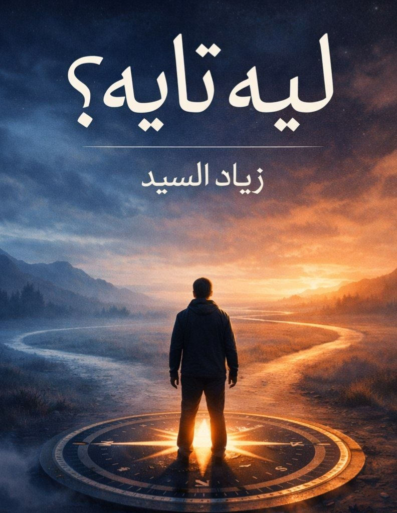

كتاب للشاب اللي ضايع… من شاب زيّه بالظبط
مش مجرد كتاب… ده صاحب بيكلمك
"ليه تايه؟" مش كتاب تنمية بشرية تقليدي. مش هتلاقي فيه كلام منمق وفلسفة فارغة.
الكتاب ده كتبه واحد عايش نفس اللي انت عايشه. واحد تايه. واحد بضعف. واحد بيقع ويقوم. واحد بيفتح السوشيال ميديا ويسيبها تسرق ساعات من عمره. واحد عارف يعني إيه تكون بعيد عن ربنا ومش عارف ترجع.
الكتاب ده رحلة. رحلة أنا وأنت مع بعض.
الفصل الأول هيجاوب على سؤال: "أنا عايش ليه؟" مش بسؤال فلسفي. بتمرين عملي يخلّيك تكتب هدفك في الحياة بنفسك.
الفصل التاني هيفهمك ليه بتعمل الذنب وانت عارف إنه غلط. وهيديك خطوات عملية تقلل الذنب تدريجيًا. مش تبطل مرة واحدة. تقلل شوية شوية.
الفصل الثالث هيكشف لك إزاي التطبيقات دي مصممة عشان تدمنها. وهيديك نظام عملي يخلّيك تمسك زمام دماغك تاني.
الفصل الرابع هيفرق لك بين الحب الحقيقي والتعلق المرضي. وهيساعدك تحافظ على نفسك في السن ده.
الفصل الخامس مش هيقول لك "صلي وهتبقى تمام". هيديك جدول عملي بسيط جدًا للصلاة والقرآن والدعاء. جدول يقدر عليه أي حد.
الفصل الختامي هو رسالة أخيرة من واحد تايه زيّك. عشان تفتكر إنك مش لوحدك في الطريق ده.
"مشكلتك مش إنك بتغلط… مشكلتك إنك فقدت الاتجاه."
"مش معنى إنك وقعت في الحفرة إنك تبني فيها بيت."
"الموبايل جهاز. انت اللي بتقرر تستخدمه، ولا هو اللي بيستخدمك."
"متخليش حد هو كل حياتك. خليك انت كل حياتك. وبعدين شاركها مع حد يستاهل."
"مش مهم طول الغياب. المهم إنك رجعت."
"التوبة مش نهاية الطريق. التوبة هي بدايته."